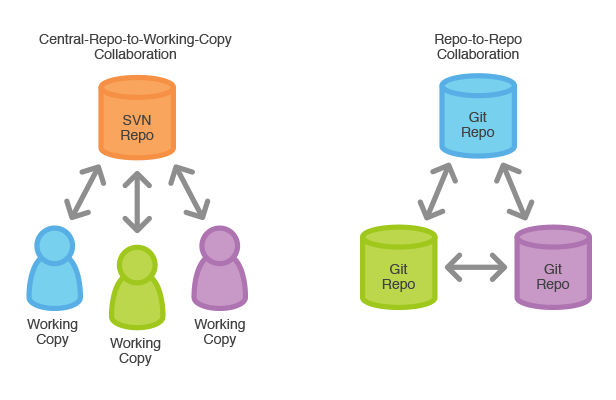

Capítulo 2 Fundamentos de Git
A continuación, un par de recomendaciones para el resto del curso:
Tomar nota de los comandos que se verán en el curso, así como de que hace y como funciona cada uno, de forma que ustedes mismos entiendan lo que hace un comando y en que casos se ocupa.
Constantemente revisar su lista de comandos, esto para que vayan repasando y se familiaricen con los mismos, es recomendable hacerlo antes de cada sesión para tener esos conocimientos frescos.
2.1 Introducción a los fundamentos de Git
Git es un sistema de control de versiones que, a diferencia de otros sistemas de control de versiones, almacena y maneja la información como un conjunto de copias instantáneas de un sistema de archivos miniatura.
La mayoría de las operaciones en Git solo necesitan archivos y recursos locales para funcionar, lo que lo hace muy rápido.
Git tiene tres estados principales en los que se pueden encontrar tus archivos:
Confirmado: significa que los datos están almacenados de manera segura en tu base de datos local.
Modificado: significa que has modificado el archivo pero todavía no lo has confirmado a tu base de datos.
Preparado: significa que has marcado un archivo modificado en su versión actual para que vaya en tu próxima confirmación.
Esto nos lleva a las tres secciones principales de un proyecto de Git: El directorio de Git (Git directory), el directorio de trabajo (working directory), y el área de preparación (staging area).
El directorio de Git: Es donde se almacenan los metadatos y la base de datos de objetos para tu proyecto.
El directorio de trabajo: Es una copia de una versión del proyecto. Estos archivos se sacan de la base de datos comprimida en el directorio de Git, y se colocan en disco para que los puedas usar o modificar.
El área de preparación: Es un archivo, generalmente contenido en tu directorio de Git, que almacena información acerca de lo que va a ir en tu próxima confirmación. A veces se le denomina índice (“index”).
Git está diseñado para gestionar proyectos de software y otros tipos de documentos de manera eficiente y colaborativa. Aquí están algunos conceptos fundamentales:
Repositorio: Es un espacio donde Git almacena todos los archivos y carpetas que forman parte de tu proyecto.
Clonar: Es hacer una copia exacta de un repositorio remoto en tu máquina local.
Status: Muestra el estado actual de tu repositorio de Git, incluyendo cambios sin confirmar y archivos no rastreados.
Commit: Es un registro de cambios en el repositorio. Cada commit tiene un mensaje que describe los cambios realizados.
Branch (Rama): Es una versión paralela del código principal. Se utilizan para desarrollar funcionalidades nuevas sin afectar el código principal hasta que estén listas.
Merge (Fusionar): Es el proceso de combinar cambios de una rama a otra. Por ejemplo, fusionar una rama de funcionalidad en la rama principal (como
mainomaster).Push (Subir) y Pull (Bajar):
Pushse refiere a enviar cambios locales al repositorio remoto, mientras quePulles obtener cambios del repositorio remoto a tu repositorio local.

2.2 Importancia de Git
¿Porqué es importante saber Git o cualquier otro sistema de control de versiones?
Los sistemas de control de versiones (SCV), como lo es Git, son fundamentales en el desarrollo de software por varias razones clave:
Gestión de Historial: Permiten mantener un registro detallado de todos los cambios realizados en el código y documentos del proyecto. Cada modificación se documenta con un mensaje descriptivo, lo que facilita la comprensión de la evolución del proyecto.
Colaboración Eficiente: Facilitan el trabajo en equipo al permitir que varios desarrolladores trabajen simultáneamente en diferentes aspectos del proyecto. Las ramas (branches) permiten trabajar en nuevas funcionalidades sin interferir con el código principal.
Reversión y Recuperación: Ofrecen la capacidad de revertir cambios no deseados o recuperar versiones anteriores del código en caso de errores o problemas inesperados.
Experimentación Segura: Las ramas permiten probar nuevas ideas de forma segura antes de integrarlas en el código principal, lo que ayuda a mantener la estabilidad del proyecto.
Seguimiento de Responsabilidades: Asignan responsabilidades claras al registrar quién realizó cada cambio y cuándo, lo que facilita la revisión y la resolución de problemas.
Es como en un videojuego donde tienes puntos de control, en el caso de Git serían los commits, a los que puedes volver si te encuentras en un problema y debes andar por otro camino o seguir una estrategia diferente.

En resumen, los SCV son esenciales para mantener la integridad, colaboración y evolución ordenada de los proyectos de software, mejorando la eficiencia y reduciendo el riesgo de errores en el desarrollo.
Existen distintos modelos de SCV, a continuación explicaremos 2 de los más implementados, veremos sus características y complementaremos con una analogía.
Repositorio Central

Es un modelo de control de versiones donde existe un único servidor central que contiene la versión principal del proyecto. Los desarrolladores envían sus cambios directamente a este servidor central.
Características:
Centralizado: Todos los desarrolladores envían y reciben cambios desde el mismo lugar.
Dependencia del servidor: Requiere acceso constante al servidor central para realizar operaciones clave como commits y actualizaciones.
Historial único: El historial completo del proyecto reside en el servidor central.
Ejemplo:
Imagina que hay una Torre de los Vengadores (Repositorio Central) en Nueva York. Esta Torre es el cuartel general de los Vengadores y donde se almacenan todas las misiones y planes importantes (código fuente). Todos los Vengadores (desarrolladores) tienen que ir a esta torre para obtener las misiones y para reportar los resultados de sus tareas.
Obteniendo misiones (Pulling): Cada Vengador (desarrollador) vuela a la Torre de los Vengadores (repositorio central) para obtener su misión (código actual). Cuando alguien necesita una actualización, va directamente a la Torre.
Reportando misiones completadas (Pushing): Una vez que el Vengador ha completado su misión (hecho sus cambios), vuelve a la Torre para informar (hacer push) y actualizar el cuartel general con los resultados. Todos los demás Vengadores pueden ver esta actualización la próxima vez que vuelvan a la Torre.
En este modelo, la Torre de los Vengadores es la única fuente de verdad y todos los Vengadores dependen de ella.
Repositorio Distribuido

En este modelo cada desarrollador tiene una copia completa del repositorio, incluyendo historial y ramas, en su máquina local. Los cambios se intercambian directamente entre repositorios locales o a través de uno central opcional.
Características:
Descentralizado: Cada desarrollador tiene su propio repositorio completo, lo que permite trabajar sin conexión a internet y facilita la colaboración.
Flexibilidad: Los cambios pueden ser compartidos entre repositorios locales o a través de repositorios remotos.
Ramas y experimentación: Permite a los desarrolladores trabajar en ramas independientes y experimentar sin afectar el repositorio principal hasta que estén listos.
Ejemplo:
Ahora, imagina que el multiverso de Marvel está en plena acción, con diferentes versiones de los Vengadores en cada universo. Cada uno de estos equipos de Vengadores (desarrolladores) tiene su propia Torre (su propio repositorio) en su universo.
Misiones propias (Local Commits): En cada universo, los Vengadores tienen sus propias misiones que pueden completar de manera independiente, sin tener que volver a la Torre principal en Nueva York. Cada universo tiene su propia copia de las misiones (repositorio completo) y pueden hacer cambios sin necesidad de interactuar con otros universos.
Intercambio de misiones entre universos (Push/Pull entre repositorios): A veces, los Vengadores de un universo pueden decidir compartir misiones o resultados con otro universo. Por ejemplo, los Vengadores de Tierra-616 podrían decidir que los Vengadores de Tierra-199999 necesitan saber algo que descubrieron. Entonces, envían esa misión o resultado (push) a la Torre de otro universo o piden recibir actualizaciones (pull) de ellos.
Sin Torre central única: No hay una Torre central a la que todos los Vengadores tengan que ir. Cada universo es autónomo y puede compartir información con otros universos según sea necesario.
La diferencia clave radica en la arquitectura y la forma en que se gestionan y comparten los cambios. Los repositorios centrales son más tradicionales y dependen de un servidor centralizado, mientras que los distribuidos ofrecen mayor flexibilidad, autonomía y capacidad de trabajo offline.
Git trabaja con el sistema de repositorio distribuido lo que permite que todo el equipo trabaje libremente sin depender de que el servidor central permanezca en condiciones de trabajo.

2.3 Configuración inicial de Git
Para comenzar vamos a configurar nuestro nombre de usuario, así como nuestro correo electrónico, estos van a servir para identificarnos y, más adelante, conectarnos con Github.
El correo no necesariamnete debe estar registrado en Github, sin embargo, para trabajar con esta plataforma es recomendable usar el correo con el que te registraste o vas a registrar en Github, ya que tanto el nombre como el correo sirven para identificar al usuario.
Al iniciar un repositorio, Git crea una rama principal que generalmente es llamada master o main, Por diversas razones ultimamente esta segunda opción se ha vuelto la prferencia, por lo que vamos a establecer main como nombre por defecto de la rama principal:
Con este comando se establece main como nombre por defecto de la rama principal para cualquier nuevo repositorio.
Si prefieres cambiar el nombre de la rama principal, o cualquier otra, puedes usar:
Cambia el nombre [actual] de la rama por el [nuevo] en el repositorio actual sin alterar la configuración.
Para visualizar las configuraciones que tenemos en git, podemos utilizar el comando
Este comando abre el archivo de configuración global de Git en el editor de texto predeterminado para que puedas editarlo.
2.4 Primeros comandos de Git
Para empezar vamos a abrir la terminal, en caso de Windows Git Bash, para presentar los primeros comandos.
Muestra la versión instalada de Git en tu sistema. En este caso contamos con la versión 2.47.0 de Git.
usage: git [--version] [--help] [-C <path>] [-c <name>=<value>]
[--exec-path[=<path>]] [--html-path] [--man-path] [--info-path]
[-p | --paginate | -P | --no-pager] [--no-replace-objects] [--bare]
[--git-dir=<path>] [--work-tree=<path>] [--namespace=<name>]
[--super-prefix=<path>] [--config-env=<name>=<envvar>]
<command> [<args>]
These are common Git commands used in various situations:
start a working area (see also: git help tutorial)
clone Clone a repository into a new directory
init Create an empty Git repository or reinitialize an existing one
work on the current change (see also: git help everyday)
add Add file contents to the index
mv Move or rename a file, a directory, or a symlink
restore Restore working tree files
rm Remove files from the working tree and from the index
examine the history and state (see also: git help revisions)
bisect Use binary search to find the commit that introduced a bug
diff Show changes between commits, commit and working tree, etc
grep Print lines matching a pattern
log Show commit logs
show Show various types of objects
status Show the working tree status
grow, mark and tweak your common history
branch List, create, or delete branches
commit Record changes to the repository
merge Join two or more development histories together
rebase Reapply commits on top of another base tip
reset Reset current HEAD to the specified state
switch Switch branches
tag Create, list, delete or verify a tag object signed with GPG
collaborate (see also: git help workflows)
fetch Download objects and refs from another repository
pull Fetch from and integrate with another repository or a local branch
push Update remote refs along with associated objects
'git help -a' and 'git help -g' list available subcommands and some
concept guides. See 'git help <command>' or 'git help <concept>'
to read about a specific subcommand or concept.
<!-- See 'git help git' for an overview of the system. -->Muestra una lista de comandos disponibles en Git junto con una breve descripción de cada uno y cómo usarlos.
Muestra la documentación detallada y las opciones disponibles para el comando especificado en Git.
2.5 Primer Repositorio [Ejercicio]
Con el material Demografia y en compañía de los instructores, van a crear su primer repositorio, para ello hay que acceder a la carpeta Demografia, una vez descomprimido el arcivo Demografia.zip.
En este ejercicio se van a presentar los siguientes comandos:
Este comando inicializa un nuevo repositorio de Git en el directorio actual [Demografia], creando un subdirectorio .git con todos los archivos necesarios para el control de versiones.
En la rama main
No hay commits todavía
no hay nada para confirmar (crea/copia archivos y usa "git add" para hacerles seguimiento)El comando muestra el estado actual del repositorio, incluyendo los cambios en el área de preparación y los archivos modificados que no están preparados para el commit.
Añade la carpeta images al área de preparación para ser incliudo en el próximo commit, en caso de ser un directorio se agregan tolos los archivos y subdirectorios que contiene.
Agrega todos los archivos nuevos y modificados del directorio actual al área de preparación para el próximo commit.
Deshace los cambios en EDOMEX-demo.R, en este caso no hay cambios pero el archivo no se guardará, retirándolo del área de preparación sin modificar el directorio de trabajo.
Si verificamos el estado del repositorio, veremos algo así:
En la rama main
No hay commits todavía
Cambios a ser confirmados:
(usa "git rm --cached <archivo>..." para sacar del área de stage)
nuevos archivos: Demografia.Rmd
nuevos archivos: Demografia.pdf
nuevos archivos: DistribucionNE-2010.xlsx
nuevos archivos: DistribucionNE-2020.xlsx
nuevos archivos: EDOMEX2010.Rda
nuevos archivos: EDOMEX2010.csv
nuevos archivos: EDOMEX2010M.Rda
nuevos archivos: EDOMEX2020.Rda
nuevos archivos: EDOMEX2020.csv
nuevos archivos: EDOMEX2020M.Rda
nuevos archivos: images/indice-masculinidad.png
nuevos archivos: images/piramide-EDOMEX-2010.png
nuevos archivos: images/piramide-EDOMEX-2020.png
Archivos sin seguimiento:
(usa "git add <archivo>..." para incluirlo a lo que será confirmado)
EDOMEX-demo.R[main (commit-raíz) 37fd5c8] commit inicial
13 files changed, 395 insertions(+)
create mode 100644 Demografia.Rmd
create mode 100644 Demografia.pdf
create mode 100755 DistribucionNE-2010.xlsx
create mode 100755 DistribucionNE-2020.xlsx
create mode 100644 EDOMEX2010.Rda
create mode 100755 EDOMEX2010.csv
create mode 100644 EDOMEX2010M.Rda
create mode 100644 EDOMEX2020.Rda
create mode 100644 EDOMEX2020.csv
create mode 100644 EDOMEX2020M.Rda
create mode 100644 images/indice-masculinidad.png
create mode 100644 images/piramide-EDOMEX-2010.png
create mode 100644 images/piramide-EDOMEX-2020.pngRealiza un commit con un mensaje descriptivo especificado en "commit inicial", guardando los cambios realizados en el repositorio de Git.
Hasta esta parte del ejercicio creaste tu primer repositorio, conociste al área de preparación e hiciste tu primer commit. Quizá ahora tengas una pregunta en mente.
¿Para qué me sirve estar haciendo commit frecuetemente?.
Supongamos que por un fallo se corrompieron los archivos en los que estabas trabajando, o que por error borraste algo que no debías; esta clase de sucesos ocurren con bastante frecuencia pero, con ayuda de Git, podrás recuperar tu información.
El comando git checkout tiene muchas funcionalidades, pero en particular git checkout -- . restaura todos los archivos en el directorio de trabajo a su estado más reciente en el repositorio (último commit), descartando los cambios no confirmados, permitiendo recuperar la información delo último commit realizado, pero esto sólo con los archivos a los que Git les da seguimiento, por lo que es una buena páctica hacer commit con cierta regularidad.
commit e4d9d8e7b9367137765f42870a06e29d295a7434 (HEAD -> main)
Author: [Nombre de usuario] <[Direccion de correo]>
Date: Mon Jul 8 21:55:45 2024 -0600
commit inicialMuestra el historial de commits del repositorio, incluyendo mensajes, autores y fechas, la clave alfanumérica que aparece al principio de cada commit es el hash con el que Git regitra ese commit, cada clave es distinta y le corresponde una única instantanea (commit). Este comando muestra mucha información que realmente entorpece la visualización, pero hay maneras de mejorar la forma en que se presenta esta información.
Muestra una forma reducida del hash de cada commit seguido de su mensaje de identificación.
Cabe aclarar que la palabra HEAD marca al último commit realizado y que (HEAD -> main) indica que dicho commit se realizó en la rama main.
2.6 Distintas maneras de agregar elementos al Stage
Ya sabemos que con git add podemos agregar uno por uno los elementos que deseamos al Stage (área de preparación), y que con git add . podemos agregar todos los archivos disponibles, pero imagina que modificaste muchos archivos, pero no quieres agregalos todos y hacerlo de uno en uno sería muy tardado.
Puedes agregar archivos con el mismo formata ubicados en el mismo directorio utilizando:
Agrega al Stage todos los archivos .[formato] que se encuentren en el directorio actual, pero no hará nada con los archivos que se encuentren en un subdirectorio.
Este comando agrega los archivos .[formato] dentro de [subdirectorio]/ al Stage.
Agrega todos los archivos modificados del [subdirectorio].
Nota:
Git de manera automática ignora los directorios vacíos por lo que, si no tienes cuidado, puede ignorar un fichero importante y llegar a romper tu proyecto, para evitarlo se suele agregar un archivo llamado .gitkeep a las carpetas vacías un archivo especial para que git reconozca que debe hacerles seguimiento.
De esta manera puedes organizar más facilmente los elementos modificados.
2.7 Repaso
Ahora un breve repaso de los comandos que hemos visto hasta ahora.
Configura el nombre de usuario global para todos los repositorios de Git en tu sistema.
Configura el correo electrónico global para todos los repositorios de Git en tu sistema.
Con este comando se establece main como nombre por defecto de la rama principal para cualquier nuevo repositorio.
Cambia el nombre [actual] de la rama por el [nuevo].
Abre el archivo de configuración global de Git en tu editor de texto predeterminado para que puedas editarlo.
Muestra la versión instalada de Git en tu sistema
Muestra una lista de comandos disponibles en Git junto con una breve descripción de cada uno y cómo usarlos.
Muestra la documentación detallada y las opciones disponibles para el comando especificado en Git.
Este comando inicializa un nuevo repositorio de Git en el directorio actual.
Muestra el estado actual del repositorio, incluyendo los cambios en el área de preparación y los archivos modificados que no están preparados para el commit.
Añade archivos al área de preparación para ser incluidos en el próximo commit.
Agrega todos los archivos nuevos y modificados del directorio actual al área de preparación para el próximo commit.
Deshace los cambios en el archivo especificado, retirándolo del área de preparación sin modificar el directorio de trabajo.
Realiza un commit con un mensaje descriptivo especificado, guardando los cambios realizados en el repositorio de Git.
Restaura todos los archivos en el directorio de trabajo a su estado más reciente en el repositorio (último commit), descartando los cambios no confirmados.
Muestra el historial de commits del repositorio, incluyendo mensajes, autores y fechas.
Agrega al Stage todos los archivos .[formato] que se encuentren en el directorio actual.
Este comando agrega los archivos .[formato] dentro de [subdirectorio]/ al Stage.
Agrega todos los archivos modificados del [subdirectorio].
2.8 Alias
Ya conocen los comandos más básicos de Git y seguro han notado que muchos muestran información que generalmente no necesitamos, la gran mayoría de comandos en Git cuentan con etiquetas que permiten mostrar la información de manera distinta a como se hace normalmente pero, como se imaginarán, mejorar la visualización de la información hace que los comandos se extiendan mucho; por ello ahora aprenderán a crear sus propios alias.
Un alias de Git es un atajo personalizado que se configura para simplificar y acortar comandos de Git frecuentemente usados.
Para crear tu propio alias utiliza:
Establece un alias de manera que git [alias] hará lo mismo que git "[comando]"
Así pueden crear tus propios alias para facilitarse el trabajo.
Un ejemplo muy útil sería:
Veamos el cambio, la salida de status
En la rama main
Archivos sin seguimiento:
(usa "git add <archivo>..." para incluirlo a lo que será confirmado)
EDOMEX-demo.R
no hay nada agregado al commit pero hay archivos sin seguimiento presentes (usa "git add" para hacerles seguimiento)La salida de s
Como pueden ver, el uso de alias es muy útil, sobre todo con comandos que se usan repetidamente.
Por último una recomendación de alias que será muy útil en adelante:
git config --global alias.lg "log --graph --abbrev-commit --decorate --format=format:'%C(bold blue)%h%C(reset) - %C(bold green)(%ar)%C(reset) %C(white)%s%C(reset) %C(dim white)- %an%C(reset)%C(bold yellow)%d%C(reset)' --all"Con este alias se mostrarán los registros de un repositorio de manera resumida y organizada, de forma que será más facil identificar la información.